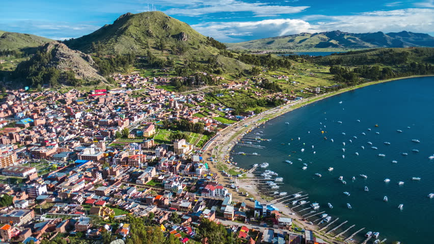
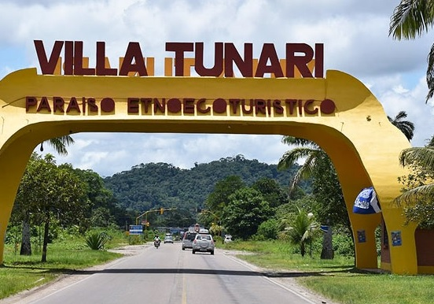

DASER-GuiaTuristica
Copacabana

Copacabana es una pequeña ciudad y un municipio de Bolivia y una de las principales localidades ribereñas del lago Titicaca. Es la capital de la provincia de Manco Kapac, ubicada en el departamento de La Paz.
Está ubicada a 155 km de la ciudad de La Paz.
Es un centro de peregrinación por hallarse en la misma la imagen de la Virgen de Copacabana, la advocación mariana más extendida en Bolivia.
Villa Tunari

Villa Tunari pertenece al trópico cochabambino, ubicado entre los andes y la amazonía. Este territorio ofrece increíbles paisajes, provistos de una exuberante vegetación y una hidrografía abundante en ríos, arroyos, caídas de agua y pozas naturales.
Clima

Disfrutas mas tu viaje verificando como estara el clima durante tu estadia